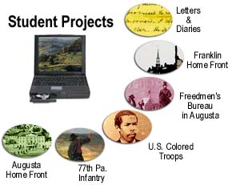

Digital History and the American Civil War

These projects represent the work of six teams of students at the University of Virginia in HIUS 403 "Digital History and the American Civil War." The projects are fully developed web sites on a topic of importance for the Valley Project. Enter any one of these to find original material--letters, photographs, diaries and records of the Civil War. The students in this course conducted all of their own research at the National Archives, wrote all the HTML pages for the web sites, and had full responsiblity for navigational design. These nodes off of the Valley Project site are powerful sites in their own right. For example, the U. S. Colored Troops site is probably the deepest electronic archive on the Web of information on the African-American experience in the U.S.C.T. Each project charts new ground, bringing new Civil War sources to bear. This class was supported by a Teaching with Technology Initiative Grant at the University of Virginia. Ed Ayers and Will Thomas would like to thank the Teaching Resource Center at UVa. and all of the support personnel for the Teaching with Technology Initiative that helped make this class successful, especially our ITC Advisor Yitna Firdyiwek. |